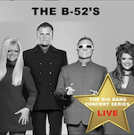
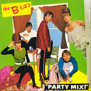

what is mtm?
Merry Christmas my true loves
This project is a nexus of several different life events that each needed to happen for their own unique reasons and in their own timeframe. Many years ago my brother pleaded with me to write a book about my life because I live distant from my family and you have never had a chance the learn about me, Maddie, Grace, and Hunter. He thought that I had lived a fascinating life and wanted me to make sure that you knew my life story and about me. We see each other when we are home but you never get a chance to get inside my head and share my thoughts, and, I'll tell you what, there's a lot going on up there sometimes. I needed to define myself and figure out what was going on, and after a Grand Canyon trip, I figured out that I suffer from depression and PTSD, which I would later learn was related to my military service. I never could come up with a way of taking the first step to make this project happen. I've also realized through the help of my VA counselor that our family has a history of mental heath issues, and that I was not exempt from being vaunerable to them,
I want to thank Maddie for being the one kick-started Music That Matters (mtm) when she asked "What type of music do you listen to, Uncle Tim?" while we were riding home from Michigan in the Indermuehle grocery getter. My mind kept looping back to this question and the simple answer I gave at the time. It's easy to rattle a bunch of band names of but explaining the big picture and what that music meant in that time frame seemed more interesting. When I was learning web development technology in Boulder my boss liked the idea and thought that I should make it interactive project. COVID has given me time to think about what is important, and also gave me the time to start this project. Now that the code is written, my creative juices started flowing. I've also read while educating myself about PTSD that writing can be useful to veterans and people trying to cope by re-wiring the brains neural paths. Often times it's easier for me to write my feelings than try to verbalize them. Ask Uncle Vince what it's like when that train jumps that track. LOL.
How mtm works
mtm is an interactive project of words, images, thoughts and music. It's technology and it's hieroglyphics.
It's energy and soul. It's sun, wind, earth, and water. It's life. As part of mtm, I have included an
Indermuehle family LiveXLive premium streaming music
service. I have
set lists that I am dying to share
with you because each one is unique and is a snapshot of what was happening in my life. I've shared the login
and password info separately because there are bots roaming websites looking for such information. There is no
rhyme or reason as to why any set list is put together. Sometimes it's a vibe or feel. Some songs are included
to contrast or compliment the setlist. Sometimes you just need to add dissonance to and otherwise dreamy,
smooth feel. I don't know. Every kind of music you could ever imagine is available for the premium membership
I signed up for. My only request is, Gracie, please don't listen to gangster rap in front of the church ladies
because they prefer underground hip-hop anyway. Hahahaha! Do whetever you want, you're adults!
This is your account. Play and save and favorite music as you like. I'll be sharing my favorite set lists, but
look forward to what YOU ALL can teach me about your music. Music is a two way street that is best shared with
the ones you love
In the Top Picks section, if you click on the album cover for each song you will be taken to the song on the list.
Each episode will also include thoughts and pictures of what was happening that day in time. Any text in BLUE is a link that may lead you on a side tangent. There's no order or to the future releases of mtm because I'm going to stop being so well planned for once, and just surrender myself to the flow like a canoe ride down Chipmunk Rapid. There's so much cool music in the world, and being in Conover doesn't lend itself to discovering new music. Have fun and always rememeber how much we love all of you.
Sit back, click the LIveXLive link above, set the player at random please, and enjoy.
Merry Christmas
why the b-52's?
A Little Background first . . .
It was the fall of 1981, and the internet was being born in Silicon Valley not far from where my Uncle Gary and his family live in San Jose, California. No internet = no streaming music = no Pandora. I was a junior, 16 years old. I also grew up isolated in Kewaskum from new music scenes taking places and lands that I had no real knowledge. That all changed one afternoon when a kid named Scott came to physics class talking about this new cable channel called M-TV and it played music set to videos. Who would have ever thought?
Me watching music videos , however, would have to wait until I went away to college, lived in the dorms, and had access to cable television. There was no cable television at Mauthe Lake. The second thing that happened, more importantly, was that the same kid told us about a college radio station from the Milwaukee School of Engineering, WMSE, that played punk rock and new wave music. While we grew up listening to public radio, mom and Fred's public radio, it was nothing I had ever imagined. This was my first experience hearing punk music, reggae, new wave, early technos and that would become EDM. Daytime on WMSE was your typical NPR noise and DJ,s but at six o'clock at night, I had to be home to listen to the punk show. Punk was loud, angry, and the words were undiscernible. The lyrics involved tearing down injustice where it was found. Many bands such as the Dead Kennedys attacked Regan and the jerks that were trying to take over the country and dictate morality. For the record, a lot of the dysfuntionality currently has roots dating back to this time period. Some songs were twenty seconds long compared to the droning of twenty minute Led Zeppelin songs I heard on the crappy FM radio stations with commercial formats. While I can't remember what Vince said to me five minutes ago, I can remember that song it was Let's Have A War from a Los Angeles punk band called Fear. Having grown up hearing The Carpenters as background music in malls and dentist office everywhere, I knew after that first out of tune punk cord that I was pretty darned excited for what was about to come. It was like the first time Aunt Terry heard Elvis Presley, and the effects on our XXXX was similar! The thing that I most identified with this music was that someone else was as withdrawn and kind of angry as I was at the time. Lyric's by the lead singer of the Pretender's, Krissi Hynde, said things that never, ever would have come out of Karen Carpenter's mouth. I most admired about her was that she sang the same was as men and didn't let her be restrained by the way a lady was "supposed" to talk. It was raw and real.
why the b-52's
Radio Doctors, Third & Wells Streets, Milwaukee
In June of 1982 I left for bootcamp ten states away at Fort Benning, Georgia, and when I returned to Wisconsin in September I was a profoundly differnt person. I had been exposed to lots of new people and also new music but the new music I had discovered befoire I left home still burned deep in my soul. When I returned home with a fat wad of cash in my bank account one of my first stops was a now defunct record store in downtown Milawaukee called Radio Doctorsb> at Third and Wells streets. I remember that this was one of the first of many crappy neighborhoods I was going to see in my life, a contrats to the sasfe haven of white privalge we grew up in in Kewaskum. I din't feel in danger but boot camp had taught me to be aware of my surroundings and to not look for trouble because trouble is surely looking for you. Anyhow, it was like the universe exploded in my face like the rainbows and glitters of an exploding unicorn! There was so much music and I wanted to hear it all. Like all record stores it reaked of incense and weed odor on the employees.
Rock Lobsters and a puppy named Quiche Lorraine
And there it was, my first B-52's and first new wave album called "Party Mix". It was like art that I had never seen before. The Kate Pierson and Cindy xxxx's beehive hair doos reminded me of my Grandma Irene's hair, but bigger. It was colorful, it was art. For some odd reson there was something special about two of the guys in the band. All right, special is not the word but HOT might have been the better choice of words. What was happening was that what is called "GAYDAR" was starting to awaken in me. Gaydar is this weird thing that sometimes tells gay men there are other gay men near. It's not perfect but sometimes it's frighteninly accurate. In this case, the B-52's were one of the first out gay bands who were going to be affected by the HIV pandemioc in the near future.
I raced home with my bounty of three records from Radio Doctors. They were my highly coveted "Party Mix, "Damaged" by LA punk band Black Flag, and "In God We Trust, incorporated" by San Fransisco punk band The Dead Kennedy's. Dad's Technics turntable and receiver never sounded better in my humble opinion. I definately rocked thre house loud enough that the beagle didn't come out of hiding for days.
When I moved to Menomonie in 1983 to start a thirty year college career, I had managed to collect all of the vinyl relaeases by the B-52's, and Party Mix, my first, was still number one on my list. I had managed to collect a dozen other alternative and punk music albums. Ater moving to Colorado in 1987 after five years in Hotel Restaraunt management at Stout, I saw the B-52's at Red Rocks Music Ampitheater near Morrison, Colorado.
-
Rock Lobster
Party Mix - 1983
The voices. The surf feel. The lyrics. All of it combined is a sonic experinece that no one can replicate. Kate Pierson's voice in the opening bars is the best!
-

Planet Claire (live)
The Big Bang Conert Series - 2017
While they were a great studio band, they are better served live. I just loved the line "She drover a plymouth satellite faster than the speed of light. That's super, super sonic" -

Party Out of Bounds
Party Mix - 1981
Nothing can describe how much I liked the base line combined with keyboard space noises. If punk rock and new wave had a baby, this is what it would sound like. Just dance!
tim's top 3 picks
Me in Honey
R.E.M., Out of Time - 1991
Duet betweeen Kate Pierson of the B-52's and Michael Stipe of R.E.M., another Athens, GA band. R.E.M., like the B-52's R.E.M are advocates for the LGBQT community.bonus track
one day in time
I was your typical confused boy at that point, a junior in high school, who was waiting to bust out of his geek bubble only to find that I had turned in to a bigger geek, just cooler. The puberty monster was definately wrecking havok on me. My hairy toes that freaked me out the first day of puberty was long forgotten as I dealt with being the only gay kid in three counties (I would later realize I was completely wrong, hahaha!) Regan was president, the economy sucked, and there was the ever present threat of thermo-nuclear anihalation brought on by the USSR. I was basicslly a geeky, happy kid. I liked skiing. I liked taking pictures. Unlike my father and brother who were grerat hunters, I was happy bird hunting and squirrel hunting. Dad trusted me to use his truck so I spent a lot of time bombing around with your father. Despite how awkward I felt, I was pretty happy
After boot camp in 1982, I was defenitely rocking the free world. My first place away from home was waiting for me, and the world I knew was exploding.